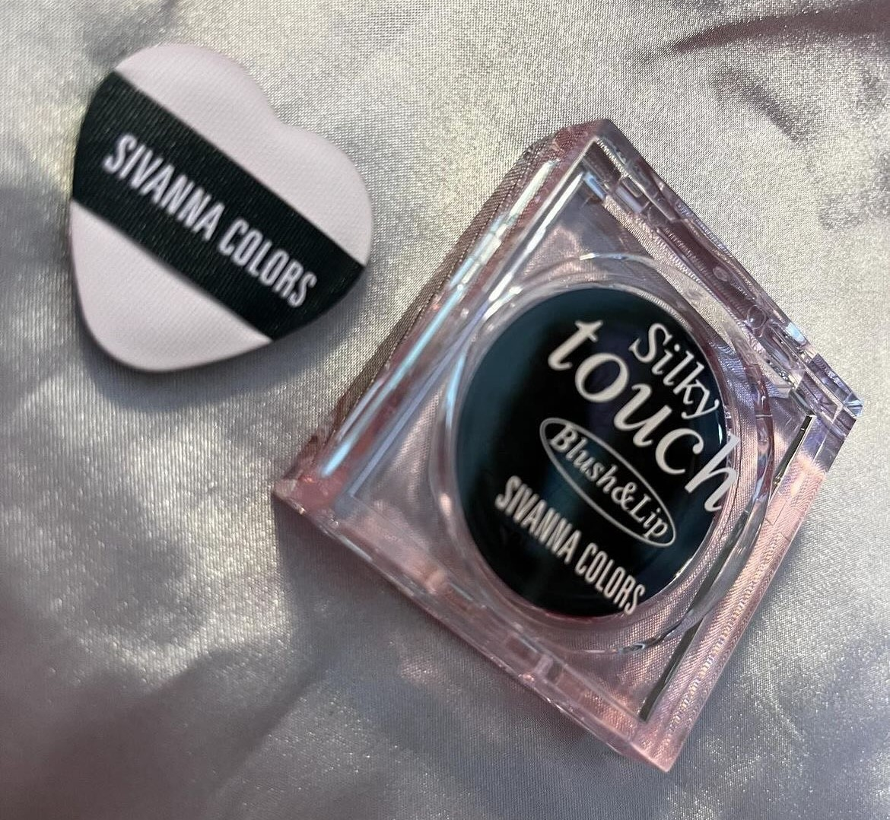
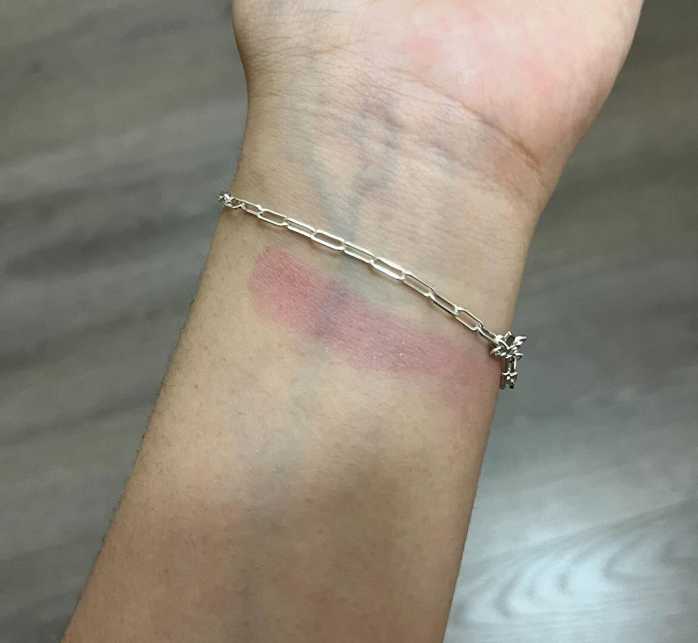
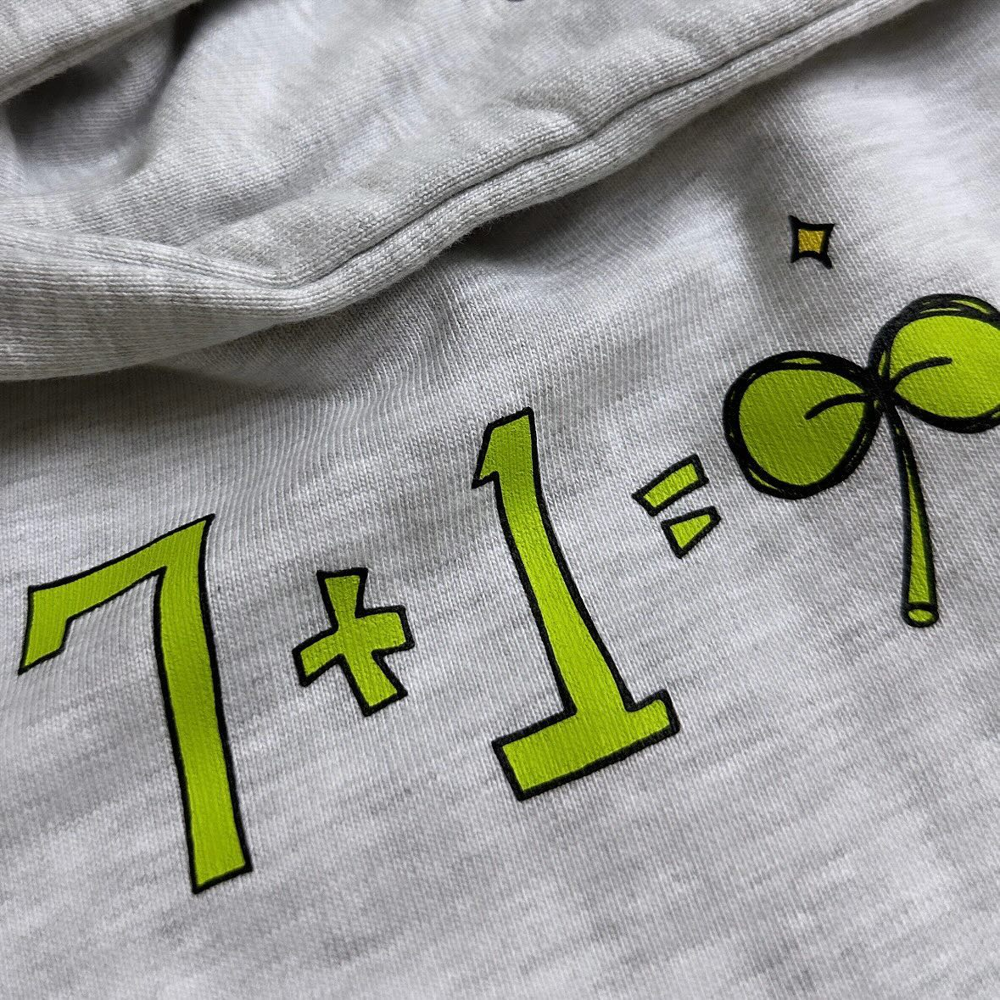
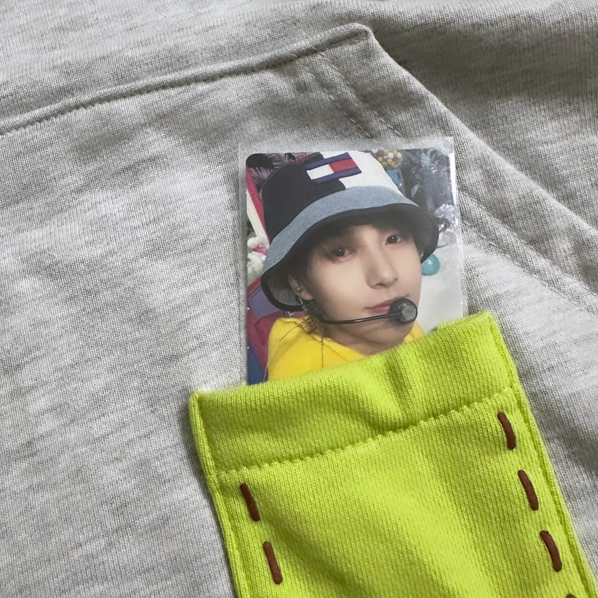
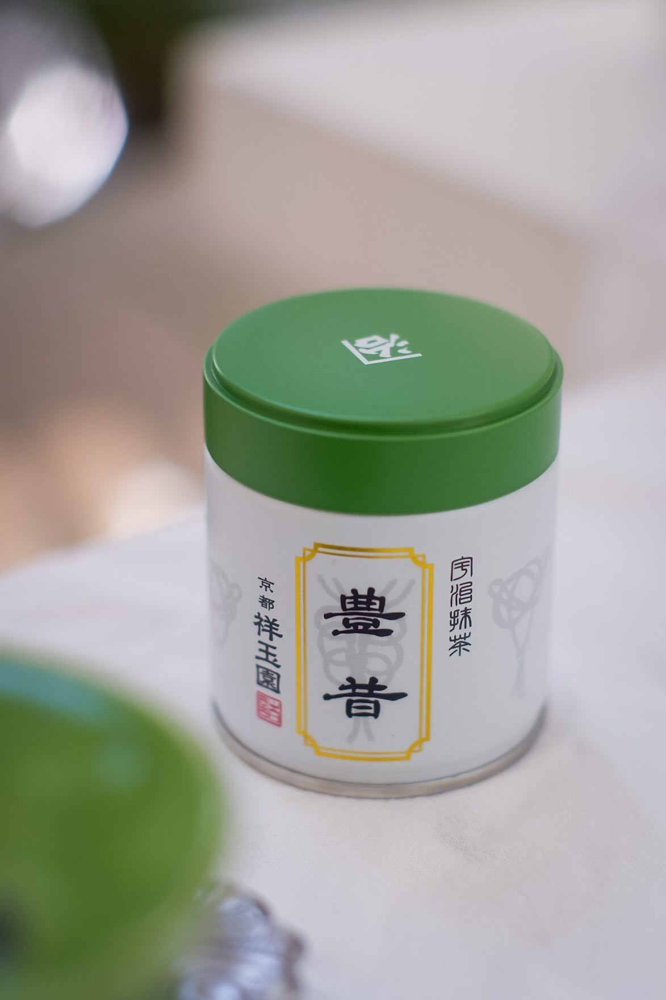
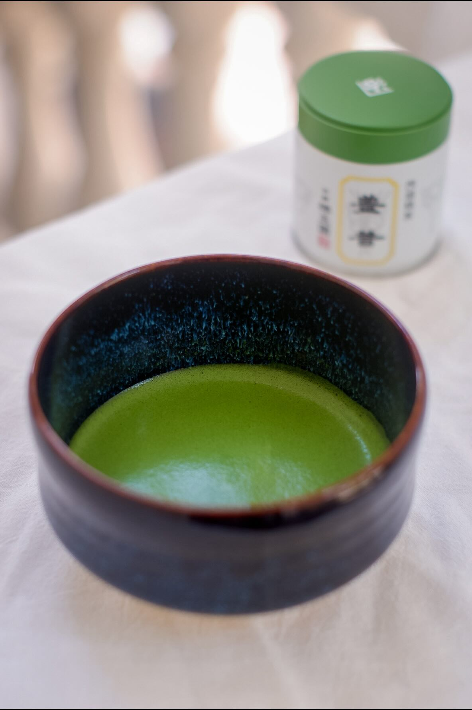
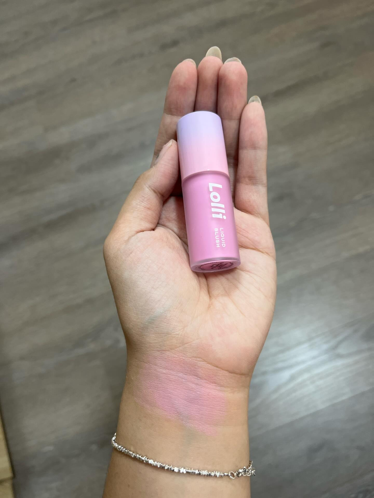
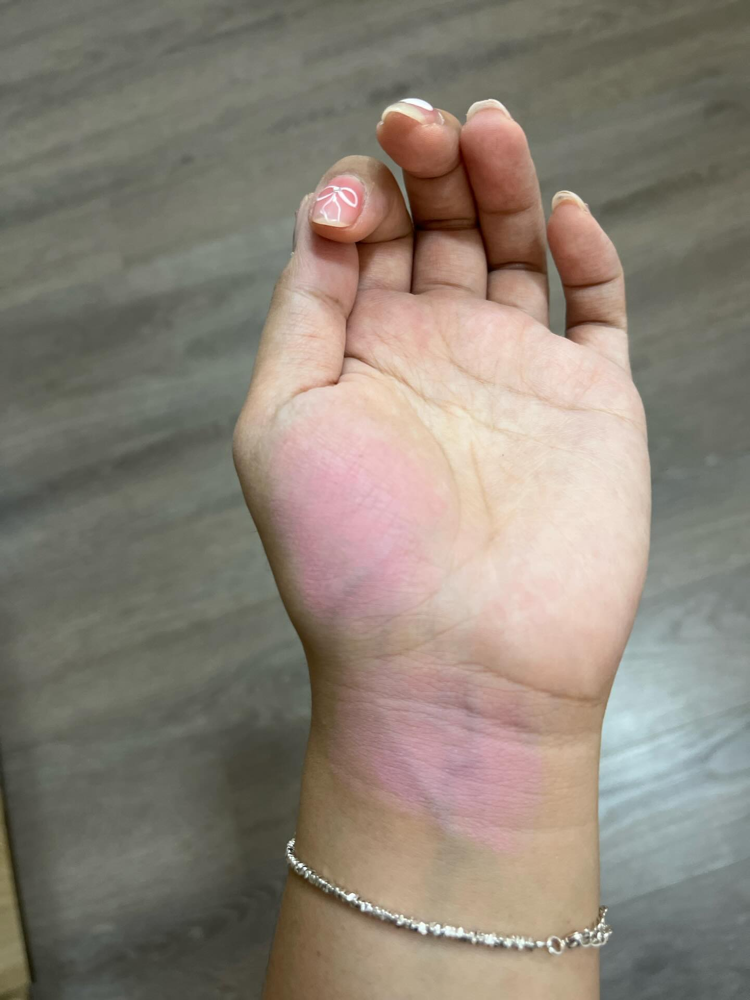
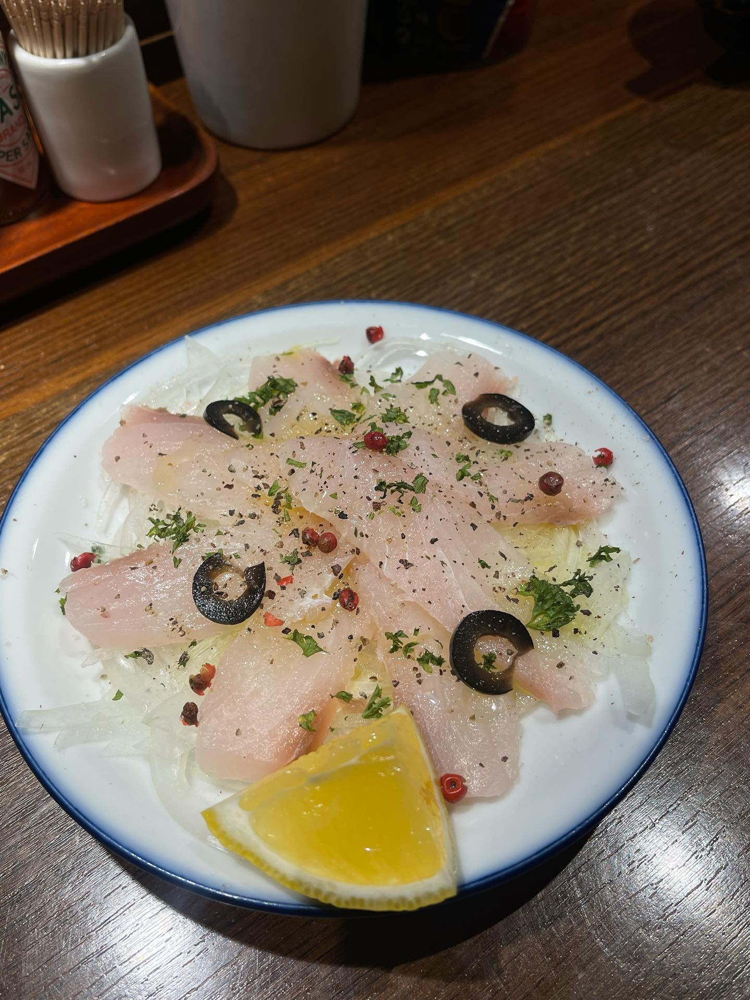
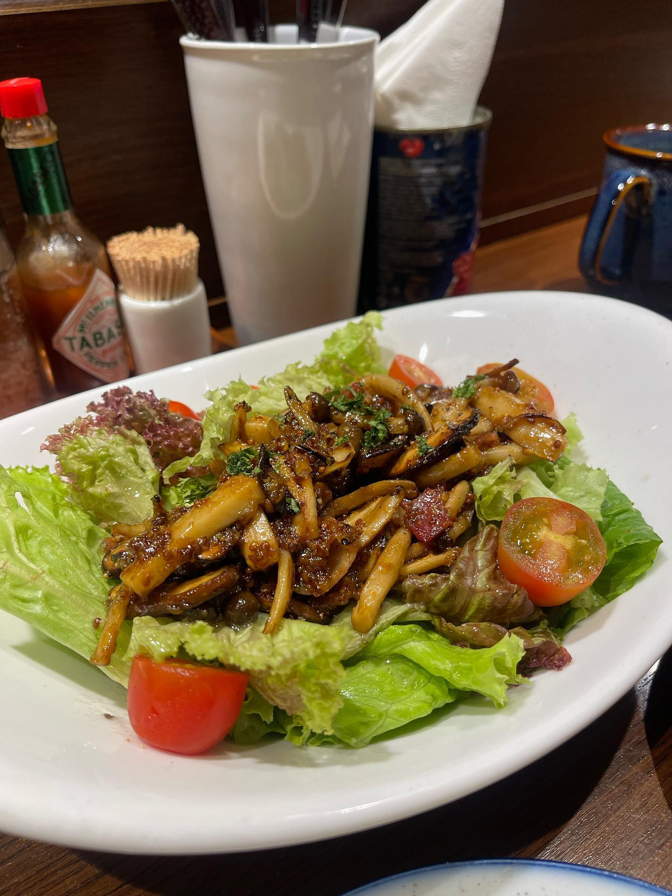

lynkkaa
Sivanna Colors Silky Touch Blush and Lip: D+
Giá Sivanna thì luôn rẻ, mình nhớ là khoảng 97k.
Màu hồng ánh tím. Kem má đen chuyển màu theo độ PH vốn rất hot năm nay, bắt đầu từ La Glace thì phải.
Chất mềm tan, nhưng mà mình thấy nó set lại nhanh, không dễ tán, kiểu giống son gió ý. Packaging cảm giác hơi nhái Clio.
Mua chơi cho biết má đen trông kiểu gì thui chứ cũng khó dùng mọi người ạ, tại không kiểm soát được nó lên màu kiểu gì và khó tán, với cả tẩy trang bằng dầu rồi mà má vẫn đỏ 😭


bemeonho
review áo hoodie by renjun hehe
- ck iu renjun của t desgin 😍
- form + chất áo siêu đẹp. chuẩn form oversize hàn í chất áo cũng dày mà mặc thích ý (na ná chất sweater champion)
- form mũ to (đầu t 56 + tóc dày mà đội thoải mái vô tư)
- dễ mặc. áo màu tối hơn hình chút và nhiều vân hơn. dùng hoạ tiết màu neo nhưng không làm chói hay lố
- siêu ý nghĩa: dòng yo dream jjoro jjujja hwaitting trong mũ áo (renjun bảo khi khó khăn đội mũ lên sẽ nghe được tiếng cổ vũ 😭)


fojoshii
/REVIEW MATCHA/
TOYO MUKASHI - SHOGYOKUEN
Lại ngoi lên vào lúc tối muộn để review matcha 🌚
Khá là hụt hẫng vì trước đó đọc mô tả trên web t thấy ẻm được đánh giá cao về cả màu sắc lẫn mùi vị. Ok chưa bàn đến mùi vị thì khi mở ra là một tông màu ngả vàng rất nhiều…. Đó là điểm trừ thứ nhất với t.
T quen uống vị nutty rồi nên tới em này t bị hú hồn bởi vegetal notes của ẻm, kiểu ẻm không cân bằng mà lại nhiều vị rau xanh quá. Đúng như hãng mô tả là mọi người sẽ nếm được vị rau spinach rất rõ👇🏻


hocskincare
Ofelia Polaroid 12: A+
Ảnh 1 là Polaroid thui, ảnh 2 thì ở lòng bàn tay là Adoring của Lemonade. Chất của O mỏng nhẹ, dễ tán, lên màu ổn, căng bóng, điểm trừ là mình thấy giữ màu cũng bình thường thui.
Adoring ngả hồng còn Polaroid ngả tím. Nếu xét hai dòng má kem này, các bạn hãy mua Ofelia. Màu Pink Sand hình như giống Adoring hơn ấy.


vinhvivu
Lần đầu đi du ngoạn ẩm thực với gái đẹp trai 🤤
Review nhẹ tiệm Aoyama lừng danh trên phố Mê Linh - khu Phạm Viết Chánh
Quán có ảnh hưởng nước Âu thì mình sẽ không thể bỏ qua các món khoái khẩu, Carpaccio (cá hôm nay họ sử dụng White Fish Cá chim trắng) vs Ajillo. Hải sản họ dùng khá tươi, đối với Shrimp Ajillo chắc đã quen với style cắt tỏi slices hơn là băm nhuyễn.
Salad nấm bacon ngon ọ - highly recommend
Tuy nhiên, mì cua vẫn chưa hợp vị của tụi mình lắm có lẽ quá “homecook style” so với giá.

